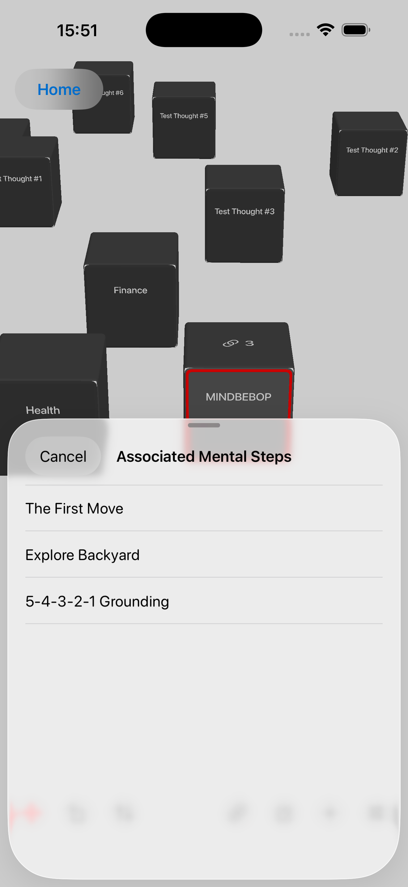
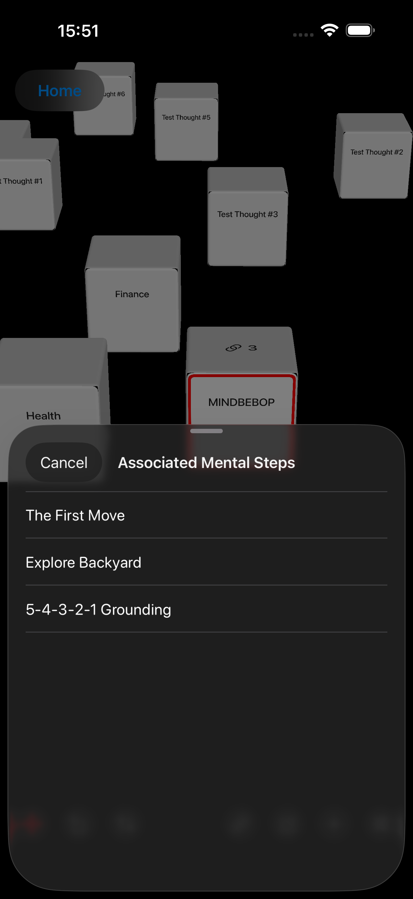

Un espacio donde los pensamientos pueden tener su lugar, los posibles caminos pueden permanecer abiertos y tú decides cuándo —o si— quieres ir a algún sitio a partir de ellos.
Los pensamientos pueden circular por el Mental Background mientras haces otras cosas.
Algunos pasan de largo.
Otros vuelven una y otra vez.
A veces basta con cambiar tu relación con un pensamiento.
Puedes mirarlo desde otra perspectiva.
Dejarlo a un lado.
Prestarle menos atención.
Establecer un límite.
O dirigir tu atención hacia otro lugar.
Puede que el pensamiento se calme.
Pero a veces permanece.
El Espacio de pensamientos ofrece a un pensamiento un lugar donde existir sin que tengas que resolverlo, organizarlo ni convertirlo en una tarea.
Y si algún día descubres que quieres llegar a algún sitio a partir de ese pensamiento, puede comenzar un camino desde allí.
Un pensamiento puede tener un lugar
antes de tener un destino.


Gran parte de MINDBEBOP comienza con pensamientos que pueden expresarse con palabras.
Una frase.
Una preocupación.
Algo que no quieres olvidar.
Una idea.
Algo que te repites una y otra vez.
Algo que aparece cuando tu atención debería estar en otra parte.
Estos pensamientos verbales pueden circular por lo que MINDBEBOP denomina Mental Background.
MINDBEBOP no presupone que todos los pensamientos del Mental Background sean importantes.
Tampoco presupone que todos los pensamientos recurrentes sean ruido sin significado.
Distintos pensamientos pueden requerir distintas formas de relacionarse con ellos.
Algunos pensamientos pueden comportarse como ruido mental.
Se repiten.
Interrumpen tu atención.
Parecen tener más importancia de la que realmente tienen.
O simplemente resulta difícil dejarlos pasar.
Las distintas herramientas de MINDBEBOP ofrecen diferentes maneras de cambiar tu relación con esos pensamientos.
MindFlipOut
Observa un pensamiento recurrente desde otra perspectiva.
MindShoutOut
Deja a un lado un pensamiento que no necesitas tener presente ahora mismo.
MindZoneOut
Ofrece un momento de calma a una mente sobrecargada.
MindBackOut
Toma distancia de determinadas aplicaciones.
MindBackyard
Dale espacio a tu atención para moverse.
A veces, ese cambio de relación es suficiente.
El pensamiento se calma.
No hace falta hacer nada más.
Pero a veces un pensamiento permanece.
Esto plantea una pregunta que MINDBEBOP está empezando a explorar:
Si cambiar nuestra relación con un pensamiento no es suficiente,
¿podría haber ocasiones en las que quisiéramos llegar a algún lugar a partir de él?
Es una hipótesis.
MINDBEBOP no presupone que todos los pensamientos persistentes contengan un objetivo o destino oculto.
El Espacio de pensamientos nos ofrece un lugar para descubrirlo.
Mental Shelving consiste en apartar conscientemente algo en la mente para que no tenga que ocupar constantemente tu atención inmediata.
El pensamiento no tiene por qué estar resuelto.
Tampoco tiene por qué estar olvidado.
Te permites dejarlo a un lado por ahora, conservando la posibilidad de volver a él más adelante.
El Espacio de pensamientos convierte este acto en una experiencia espacial.
Pensamiento
↓
Thought Block
↓
Dale un lugar en el Espacio de pensamientos
↓
Déjalo allí
↓
Vuelve cuando quieras
A esto lo llamamos Spatial Mental Shelving.
«Shelving» no se refiere a una estantería física ni a una representación gráfica de una estantería.
Se refiere al acto mental de dejar algo a un lado.
El Espacio de pensamientos proporciona a ese acto un lugar visible y persistente en el espacio.
Un Thought Block puede existir simplemente en cualquier punto de ese espacio.
No necesita ningún objeto con forma de estantería.
Ni una categoría.
Ni una prioridad.
Ni una fecha límite.
Ni una acción.
Dale un lugar al pensamiento.
Déjalo a un lado
sin perderlo.
La mayoría de los sistemas digitales convierten un pensamiento en información.
Pensamiento
↓
Texto
↓
Elemento de una lista
El Espacio de pensamientos explora otra forma de representación.
Pensamiento
↓
Thought Block
↓
Lugar
Un Thought Block proporciona a un pensamiento una presencia visual persistente en el espacio.
Puedes moverlo.
Moverte a su alrededor.
Girarlo.
Cambiar su tamaño.
Acercarte.
Alejarte.
Dejarlo en algún lugar.
Volver más adelante.
O simplemente dejarlo tranquilo.
Ver un pensamiento no significa que tengas que ocuparte de él.
Hay una diferencia entre:
Tengo que seguir acordándome de esto.
y:
Sé dónde está.
Spatial Mental Shelving explora si dar a un pensamiento un lugar persistente puede ayudar a generar esa segunda sensación.
El pensamiento sigue estando disponible.
Pero que esté disponible no significa que tenga que ocupar constantemente el primer plano de tu atención.
La mayoría de las aplicaciones llevan la información directamente a tu atención.
Mira esto.
Recuerda aquello.
Responde a esto.
Haz esto después.
El Espacio de pensamientos puede invertir esa relación.
El Thought Block puede quedarse donde está.
Tú decides si quieres acercarte a él.
El pensamiento no me interrumpe.
Soy yo quien decide acercarse a él.
Puedes acercarte y permanecer un rato junto a él.
Puedes moverlo.
Puedes descubrir algo nuevo sobre él.
O puedes darte la vuelta y dejarlo donde está.
La decisión de acercarte es tuya.
La mayoría de los sistemas de información te piden que clasifiques rápidamente lo que introduces.
¿Qué categoría?
¿Qué proyecto?
¿Qué prioridad?
¿Para cuándo?
El Espacio de pensamientos puede comenzar con una pregunta mucho más básica:
¿Dónde quiero poner esto?
Eso puede ser suficiente.
La colocación puede preceder a la organización.
O puede que nunca sea necesario organizarlo.
Una lista suele expresar relaciones mediante el orden, las etiquetas y las categorías.
Un espacio puede expresar relaciones mediante la colocación.
Un pensamiento puede estar cerca.
Otro puede estar más lejos.
Dos pensamientos pueden estar próximos entre sí.
Algo puede permanecer directamente en tu campo de visión.
Otra cosa puede estar en un lugar donde sea menos probable que te la encuentres.
El Espacio de pensamientos no necesita asignar un significado universal a estas posiciones.
Estar más cerca no tiene por qué significar ser más importante.
Estar más lejos no tiene por qué significar ser menos importante.
Ser más pequeño no tiene por qué significar tener menos relevancia.
Una rotación determinada no tiene por qué representar un tipo concreto de pensamiento.
La disposición puede reflejar simplemente cómo quieres que esos pensamientos existan a tu alrededor.
No siempre necesitas revisar formalmente lo que tienes en la mente.
A veces puedes encontrarte con pensamientos mientras te mueves por el Espacio de pensamientos.
Ah, eso sigue ahí.
Ahora lo veo de otra manera.
Puede que estas dos cosas estén relacionadas.
Todavía no quiero ocuparme de eso.
Quizá haya algún lugar al que quiera llegar a partir de aquí.
Después puedes seguir moviéndote.
No tienes que procesar todo lo que encuentras.
El Espacio de pensamientos puede hacer que revisar tus pensamientos se parezca menos a gestionar una bandeja de entrada y más a encontrarte con cosas dentro de un entorno.
Un Thought Block no es lo mismo que un objetivo.
Tampoco es lo mismo que una Mental Destination.
Imagina un Thought Block llamado:
Familia
La familia no es un destino.
Pero de ella pueden surgir distintas direcciones posibles.
Familia
↙ ↓ ↘
Pasar más tiempo juntos sin interrupciones
Conseguir mayor tranquilidad económica
Tener más paciencia en casa
Estas direcciones pueden coexistir.
Pueden cobrar importancia en distintos momentos.
Pueden corresponder a diferentes horizontes temporales.
Con el tiempo, pueden dar lugar a distintas Mental Destinations.
O puede que nunca se conviertan en Mental Navigations.
Por tanto, un Thought Block no necesita un único vector fijo.
Un Thought Block puede ser un punto de partida
desde el que son posibles varias direcciones.
El Espacio de pensamientos ofrece una forma concreta de mantener posibles caminos asociados a un pensamiento.
Un Thought Block puede vincularse a Mental Steps guardados en MindEntry.
Un Thought Block puede estar vinculado a un solo conjunto de Mental Steps.
O a varios.
Thought Block
↓
Mental Steps
Mental Steps
Mental Steps
Cuando hay Mental Steps vinculados, aparece un pequeño indicador de vínculo directamente sobre el Thought Block.
El número indica cuántos conjuntos de Mental Steps vinculados están disponibles.
Toca el indicador para ver los Mental Steps asociados a ese pensamiento.
Elige uno y MindEntry lo abrirá para que puedas comenzar esos Mental Steps.
Encontrarte con el pensamiento
↓
Ver los posibles caminos
↓
Elegir uno si quieres
↓
Comenzar los Mental Steps en MindEntry
El Thought Block sigue siendo el pensamiento.
Los Mental Steps vinculados siguen siendo posibles caminos.
Tú decides si quieres seguir alguno de ellos.


Vincular Mental Steps existentes no es la única posibilidad.
A veces te encuentras con un Thought Block y descubres que ninguno de los caminos disponibles encaja con lo que quieres hacer ahora.
O quizá todavía no hayas creado ningún Mental Steps para ese pensamiento.
El Espacio de pensamientos también puede servir como punto de partida para crear nuevos Mental Steps.
En lugar de exigirte que empieces con un plan completamente definido, una interacción con el pensamiento puede ayudarte a descubrir una posible Mental Destination.
A partir de ahí, MindEntry puede ayudarte a empezar a moverte mediante Mental Steps.
Thought Block
↓
Explorar qué podrías hacer
↓
Elegir una Mental Destination
↓
Crear Mental Steps
↓
Comenzar una Mental Navigation
La distinción importante sigue siendo la misma:
Un Thought Block no se convierte automáticamente en una tarea.
Tú decides si la interacción con él debe llevarte a actuar.
Spatial Mental Shelving proporciona un lugar a un pensamiento.
Pero una vez que un pensamiento tiene un lugar, surge otra pregunta:
¿Qué tipos de estructuras podrían cambiar
nuestra manera de encontrarnos con un pensamiento?
MINDBEBOP denomina a estas estructuras Thought Furniture.
Thought Furniture no es simplemente decoración dentro del Espacio de pensamientos.
Consiste en diseñar formas específicas de interactuar con los pensamientos.
Un elemento de Thought Furniture podría ayudarte a examinar un pensamiento, cambiar de perspectiva, explorar posibles direcciones o relacionarte con él de otra manera.
La Workbench es el primer ejemplo concreto.
Algunos pensamientos parecen intentar protegernos de algo.
Pueden anticipar un fracaso.
Un rechazo.
Una pérdida.
Una situación embarazosa.
U otros resultados que preferiríamos evitar.
MINDBEBOP denomina a estos pensamientos Fear-based Protective Thoughts (pensamientos protectores basados en el miedo).
Por ejemplo:
¿Y si fracaso?
Este pensamiento puede volver una y otra vez.
Puede interrumpir tu atención.
Quizá intentes verlo de otra manera o dejarlo a un lado.
A veces eso basta.
Pero a veces el pensamiento permanece.
La Workbench ofrece otra forma de relacionarte con él.
En lugar de intentar eliminarlo inmediatamente, la Workbench plantea una pregunta:
¿Puede este pensamiento sugerirte algo útil que podrías hacer?
No tienes que responder que sí.
La Workbench ofrece distintas posibilidades según tu respuesta.

Si el pensamiento parece sugerir una acción útil, la Workbench pregunta:
¿Qué podrías hacer?
Tú introduces tu propia respuesta.
Por ejemplo, si te preocupa fracasar en una próxima presentación, podrías responder:
Practicar la introducción durante cinco minutos.
La Workbench puede utilizar esa respuesta como una nueva Mental Destination y como nombre de un nuevo conjunto de Mental Steps.
Después, MindEntry puede ayudarte a avanzar hacia ese destino mediante Adaptive Steps.
Fear-based Protective Thought
↓
¿Qué podrías hacer?
↓
Tu respuesta
↓
Mental Destination
↓
Adaptive Steps
↓
Mental Navigation
La Workbench no decide qué deberías hacer.
Te ofrece la oportunidad de descubrir por ti mismo una acción útil.
Y el siguiente paso puede ser lo suficientemente pequeño como para que puedas comenzarlo desde donde estás ahora.
A veces no sabes si un pensamiento protector sugiere algo útil.
Quizá hayas tenido preocupaciones similares en el pasado.
Y quizá ya hayas avanzado hacia una Mental Destination a pesar de esas preocupaciones.
MindAnchor puede conservar dos tipos de información de una Mental Navigation anterior:
Expected Blocks
Los obstáculos que esperabas encontrar.
What really happened
Lo que realmente experimentaste.
Si ambos se han registrado, la Workbench puede mostrarlos para compararlos.
Por ejemplo:
Expected Block
Probablemente me quedaré completamente en blanco durante la presentación.
What really happened
Estaba nervioso al principio, pero terminé la presentación.
Esta comparación no demuestra que la próxima experiencia vaya a desarrollarse de la misma manera.
No garantiza que desaparezca el obstáculo que temías.
Tampoco significa que el miedo original careciera de fundamento.
Simplemente te permite comparar tus expectativas con tus experiencias reales.
Eso puede cambiar la manera en que te relacionas hoy con ese pensamiento.
O puede que no.
La interpretación te corresponde a ti.
A veces no quieres explorar ninguna acción.
Puede que tampoco quieras revisar experiencias anteriores.
Quizá solo quieras un momento de calma.
La Workbench puede ofrecerte una sesión de baja estimulación en MindZoneOut, en modo None.
No tienes que definir una Mental Destination.
No tienes que crear Mental Steps.
Y no tienes que resolver el pensamiento antes de alejarte de él.
No todos los pensamientos necesitan una respuesta.
A veces puedes simplemente elegir la calma.
Un pensamiento protector no es automáticamente una advertencia de que va a ocurrir algo malo.
Pero tampoco es automáticamente ruido sin significado.
La Workbench no determina qué interpretación es correcta.
No diagnostica el pensamiento.
No establece tu Mental Destination.
No exige que crees Mental Steps.
Ofrece una estructura para explorar tu relación con ese pensamiento.
Quizá haya algo útil que puedas hacer.
Quizá haya una experiencia útil que puedas recordar.
O quizá ahora mismo no quieras hacer nada.
Las tres posibilidades son válidas.
Eso convierte a la Workbench en un ejemplo de Thought Furniture.
La estructura cambia las interacciones posibles.
Pero las decisiones siguen siendo tuyas.
Vincular Mental Steps a un Thought Block no convierte el pensamiento en una tarea.
Crear nuevos Mental Steps no significa que debas completar todos los pasos.
Un camino posible no tiene por qué convertirse en el camino principal.
Varios caminos pueden permanecer disponibles al mismo tiempo.
Y no tienes que seguir ninguno.
Este pensamiento está aquí.
Hay lugares a los que podría llegar desde aquí.
No tengo que ir a ninguna parte ahora mismo.
El Espacio de pensamientos no debería convertirse en un sistema que examine tu vida y anuncie:
7 objetivos.
23 pasos.
3 cosas que ya deberías haber hecho.
Eso convertiría las posibilidades en presión.
El Espacio de pensamientos explora lo contrario:
Un camino puede permanecer abierto
sin convertirse en una exigencia.
A veces te acercas a un Thought Block y descubres que realmente quieres cambiar algo.
Hay un lugar al que quieres llegar desde donde estás.
Una dirección posible puede convertirse entonces en una dirección elegida conscientemente.
Quizá selecciones Mental Steps que ya están vinculados al Thought Block.
O quizá descubras una nueva Mental Destination mediante una interacción como la Workbench.
El cambio importante no es que el Thought Block se haya convertido en una tarea.
Es que has elegido una dirección.
Pensamiento
↓
Posibles direcciones
↓
Dirección elegida
↓
Mental Destination
↓
Mental Navigation
MindEntry proporciona la capa de Navigation.
Puedes avanzar hacia la Mental Destination mediante Mental Steps.
Realizar el siguiente movimiento.
Ver dónde te encuentras después.
Cambiar la ruta.
Cambiar la Mental Destination.
O continuar desde tu nueva Current Position.
Esta distinción es importante.
Mental Navigation implica moverse intencionadamente hacia una Mental Destination.
Current Position
↓
Mental Steps
↓
Mental Destination
El Espacio de pensamientos no exige nada de eso.
Puedes entrar sin una Mental Destination.
Puedes moverte sin intentar llegar a ningún sitio.
Puedes mirar un Thought Block sin comenzar una Navigation.
Puedes mantener Mental Steps vinculados sin iniciarlos.
Puedes ver varias direcciones posibles y no elegir ninguna.
El Espacio de pensamientos puede conservar posibilidades
antes de que se conviertan en Navigation.
MindBackyard contiene diferentes espacios para distintas formas de relacionarse con la atención.
Infinite Hallway contiene muy pocas cosas en las que tengas que pensar.
Moverte.
Deambular.
Dejar que la atención se relaje.
El Espacio de pensamientos permite que elementos de tu propia mente existan dentro del entorno.
Moverte.
Observar.
Acercarte.
Cambiar de orientación.
Pasar de largo.
Ninguno de los dos espacios requiere un destino.
Infinite Hallway también puede formar parte de una Mental Navigation.
Un Mental Step puede llevarte allí durante un rato y después devolverte al mismo Mental Step activo cuando estés preparado para continuar.
Por tanto, el Espacio de pensamientos e Infinite Hallway no tienen por qué convertirse en el mismo entorno.
Pueden desempeñar funciones diferentes dentro del sistema MINDBEBOP.
El Espacio de pensamientos no pretende convertirse en un gestor visual de tareas.
No necesita columnas To Do, Doing y Done.
Ni puntuaciones de productividad.
Ni rachas de logros.
No necesita recompensarte por llenar el espacio.
Ni por vaciarlo.
No necesita convertir todos los pensamientos en trabajo.
Ni convertir todas las Mental Navigations posibles en obligaciones.
Esto no significa que MINDBEBOP rechace la productividad.
La productividad es una de las muchas razones posibles para utilizar Mental Navigation.
Pero el Espacio de pensamientos también permite relacionarse con pensamientos que no tienen nada que ver con completar tareas.
Una posibilidad no es una presión.
El Espacio de pensamientos debería seguir siendo amplio.
Las zonas vacías no son espacio de pantalla desperdiciado.
Forman parte de la experiencia.
Un Thought Block no tiene por qué estar siempre delante de ti.
Los posibles caminos no tienen por qué estar siempre visibles.
El entorno no debería competir constantemente por tu atención.
El espacio alrededor de un pensamiento
puede ser tan importante
como el propio pensamiento.
Un entorno espacial no debería dificultar que encuentres tus propios pensamientos.
Deambular puede ser útil cuando quieres deambular.
Pero no debería ser obligatorio cuando ya sabes lo que estás buscando.
Explorar puede ser espacial.
Volver a encontrar algo debe seguir siendo sencillo.
El Espacio de pensamientos nunca debería convertirse en un laberinto que tengas que mantener.
El Espacio de pensamientos no tiene por qué reiniciarse cada vez que sales de él.
Los Thought Blocks pueden permanecer donde los colocaste.
Los Mental Steps pueden seguir vinculados a ellos.
Pero tu relación con esos pensamientos no tiene por qué permanecer igual.
Antes sentía esto muy cerca.
Ahora quiero tomar más distancia.
Antes solo veía una dirección desde aquí.
Ahora veo varias.
Antes pensaba que tenía que hacer algo al respecto.
Ahora puedo simplemente dejarlo estar.
Puede que las palabras del Thought Block no hayan cambiado.
Lo que puede haber cambiado es tu forma de encontrarte con él.
La mayoría de las aplicaciones conservan el estado más reciente de la información.
El Espacio de pensamientos podría conservar algo más sutil.
Lo que permaneció cerca.
Lo que se alejó.
Lo que siguió ahí.
Aquello a lo que volviste.
Lo que empezó a verse diferente.
Puede que regreses después de días, semanas o meses y notes que el espacio se siente diferente.
No porque una aplicación haya calculado una puntuación.
Ni porque un panel te haya dicho que has mejorado.
Sino porque tú mismo reconoces la diferencia.
Mi relación con esto ha cambiado.
Ese cambio no requiere haber completado una Mental Navigation.
A veces puede bastar con mover algo, dejarlo tranquilo o encontrarte con ello de otra manera.
El Espacio de pensamientos no pretende visualizar todos tus pensamientos.
No es un mapa mental en 3D.
No necesita mostrar todas las asociaciones.
No necesita conectarlo todo con todo.
A veces puede resultar más útil ver menos.
Un Thought Block puede existir sin revelar todas sus relaciones.
Una posible dirección puede permanecer sin explorar.
Un pensamiento puede quedarse solo.
El Espacio de pensamientos está menos interesado en reconstruir la estructura de tu mente que en ofrecerte formas de relacionarte intencionadamente con lo que hay en ella.
Spatial Mental Shelving proporciona lugares persistentes a los pensamientos.
Los vínculos con Mental Steps mantienen abiertos los posibles caminos.
La Workbench introduce Thought Furniture como una forma de interactuar con los Fear-based Protective Thoughts.
En conjunto, estas funciones abren posibilidades para nuevos experimentos.
Si un pensamiento puede tener un lugar,
¿qué otras cosas podrían cambiar nuestra manera de encontrarnos con él?
Los futuros elementos de Thought Furniture podrían revelar algo.
Ocultarlo.
Filtrarlo.
Separarlo.
Combinarlo.
Reorientarlo.
Transformarlo.
O facilitar el descubrimiento de una posible dirección.
Imagina un Thought Block llamado A.
A → otra forma de ver A
A → posibles direcciones
A → partes más pequeñas
A + B → algo nuevo que se hace visible
ABC → CBA
A → temporalmente fuera de la vista
A → Mental Steps
A → ?
Estas son posibilidades de diseño, no afirmaciones sobre cómo deben funcionar los pensamientos.
Lo importante no es el aspecto del Furniture.
Lo importante es qué tipo de relación con el pensamiento permite esa interacción.
Thought Furniture no es decoración.
Es un experimento de diseño de relaciones con los pensamientos.
Una de las posibilidades que explora MINDBEBOP es Thought Orientation.
A veces, seguir avanzando requiere cambiar el destino.
A veces, hacer que el destino sea más pequeño ayuda a seguir moviéndose.
Pero Thought Orientation plantea una pregunta diferente.
¿Qué ocurre si no cambio inmediatamente Point B,
sino la manera en que lo miro?
Dale la vuelta.
Míralo desde un lugar inesperado.
Observa qué aparece.
Puede que el propio Thought Block no necesite cambiar.
Lo que cambia podría ser tu manera de encontrarte con él.
El mismo pensamiento.
Otra perspectiva.
Se hacen visibles otras cosas.
Otra perspectiva podría revelar una nueva dirección posible.
Podría hacer que una Mental Destination existente pareciera diferente.
Podría revelar una nueva Mental Destination.
O podría mostrar que no hace falta ninguna Navigation.
Thought Furniture no debería decidir qué interpretación es correcta.
Debería crear otro punto de vista desde el que puedas observar.
Una Mental Navigation puede acabar alcanzando su Mental Destination.
Pero llegar no significa necesariamente que el Thought Block original tenga que desaparecer.
El Thought Block nunca fue lo mismo que el destino.
Más adelante puede surgir de él otra dirección posible.
Y la experiencia de la Navigation puede cambiar tu manera de encontrarte con el pensamiento original.
Pensamiento
↓
Mental Navigation
↓
Llegada
↓
Quizá ahora el pensamiento se vea diferente
Alcanzar Point B no significa que tengas que declarar que el pensamiento está terminado para siempre.
MindAnchor puede conservar algo significativo de una Mental Navigation completada con éxito.
También puede registrar qué obstáculos esperabas encontrar y qué ocurrió realmente.
Cuando ambos registros están disponibles, la Workbench puede utilizarlos.
Esto crea una conexión entre las Mental Navigations pasadas y los futuros encuentros con pensamientos protectores.
Expected Blocks
↓
Mental Navigation
↓
What really happened
↓
MindAnchor
↓
Un futuro encuentro en la Workbench
Los registros no te dicen qué debes pensar.
Te ofrecen algo que puedes comparar.
Esa comparación puede ayudarte a ver un pensamiento futuro de otra manera.
Queda abierta una pregunta más amplia:
¿Puede algo conservado en MindAnchor a partir de una Navigation completada con éxito
cambiar la perspectiva desde la que comienza otra Navigation?
MINDBEBOP no presupone la respuesta.
Ofrece maneras de explorar esa pregunta.
En conjunto, estas ideas sugieren una posible estructura más amplia para MINDBEBOP.
Un pensamiento verbal aparece en el Mental Background.
↓
Puede bastar con cambiar la relación con él.
↓
A veces el pensamiento permanece.
↓
Dale un lugar en el Espacio de pensamientos.
↓
Encuéntrate con él desde distintas perspectivas.
↓
Explora posibles caminos o interactúa con él mediante Thought Furniture.
↓
Elige una Mental Destination si quieres llegar a algún sitio.
↓
Navega.
↓
Llega.
↓
Conserva algo de tu llegada en MindAnchor.
↓
Observa qué parece diferente la próxima vez.
Esto no es una regla sobre cómo funciona la mente.
Es un modelo que MINDBEBOP está explorando.
Algunos pensamientos pueden calmarse mucho antes.
Otros pueden permanecer en el Espacio de pensamientos sin convertirse nunca en una Navigation.
Algunos pueden abrir varias direcciones posibles.
Otros pueden llevar a un lugar y, más adelante, a otro.
Algunos pueden examinarse en la Workbench sin crear Mental Steps.
El sistema no necesita decidir cuál de esos caminos debería producirse.
El Espacio de pensamientos comenzó con una pregunta sencilla:
¿Qué ocurre cuando dejar un pensamiento a un lado
se convierte en una experiencia espacial?
Ahora el experimento se está ampliando.
Podemos preguntarnos:
¿Dar un lugar a un pensamiento cambia la sensación de tener que seguir recordándolo?
¿Acercarse voluntariamente a un pensamiento se siente diferente a ser interrumpido por él?
¿Qué pensamientos se calman después de un pequeño cambio en nuestra relación con ellos?
¿Qué pensamientos permanecen?
¿Algunos pensamientos persistentes parecen contener posibles direcciones?
¿Puede un Thought Block tener varios caminos posibles sin crear presión para seguir ninguno?
¿Puede Thought Furniture ayudarnos a relacionarnos con los pensamientos de otra manera?
¿Puede un pensamiento protector sugerir a veces una acción útil?
¿Puede comparar Expected Blocks con What really happened cambiar nuestra manera de encontrarnos con un pensamiento?
¿Puede un cambio de perspectiva revelar una dirección que antes no era evidente?
¿Alcanzar una Mental Destination cambia la manera en que nos encontramos después con el pensamiento original?
No necesitamos conocer las respuestas de antemano.
El Espacio de pensamientos nos ofrece un lugar para descubrirlas.
Dale un lugar a un pensamiento.
Deja que exista sin exigir ninguna acción.
Mantén abiertos los posibles caminos sin convertirlos en obligaciones.
Explora otra forma de relacionarte con él cuando pueda ser útil.
Cambia de perspectiva cuando otro punto de vista pueda ayudarte.
Navega cuando quieras llegar a algún sitio.
Y descubre si el lugar al que llegas cambia lo que puedes ver después.
El Espacio de pensamientos se está explorando en MindBackyard como parte de MINDBEBOP Mental Background OS.
Más información sobre Mental Navigation
Copyright © 2026 MINDBEBOP — All rights reserved.